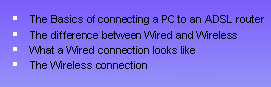

Free
powerpoint
Tutorials
|
Free
powerpoint
Tutorials
|
|
 home home |
Stay at Home and Learn | ||||
Bulleted Lists in PowerPoint |
|||||
|
Part 1, 2, 3, 4, 5, 6, 7, 8, 9, 10, 11
You should now have two slides in your presentation. Click your second slide to display it on the Main Stage: There's a few things to notice here. The title font and colour are OK, as well as the background and footer. But the default text we typed has vanished, and PowerPoint has replaced it with default text of its own. We typed "Default text", but PowerPoint has placed "Click to add text" in the AutoContent area instead. This doesn't matter, since the default text vanishes as soon as you click inside of the content area. At least the font formatting has been retained!
Adding the Bulleted ListFor the bulleted list in our presentation, we had the list items drop in from the top. In PowerPoint, this is called an Animation. Take a look at the presentation again, which you can find on the resources page. The presentation is called Wireless.ppt. Move to slide two, and you'll see the title first. Click your mouse anywhere on the screen and you'll see the first bulleted item drop in from above. Each time you click your mouse, a new item will drop in. Before you see how to do this, let's add the bullets The bullets can go in the text box we added, the one at the bottom that says "Click to add text". To move and resize this text box, click on the edges with your mouse button. A new menu should appear: Click on Format Placeholder. You should then see the Format AutoShape dialogue box. This one: Click on the Size tab. Set the Height to 6.14 cm and the Width to 15.89. Then click the Position tab: Set the Horizontal to 5.29 and the Vertical to 7.62. Click OK. Your slide two should then look like this: Now click inside the resized and repositioned text box. Add the following line of text: The Basics of connecting a PC to an ADSL router Now highlight the text you've just added, as in the image below: To turn this into a bulleted list, click Format from the menu bar at the top of PowerPoint. From the Format menu, select Bullets and Numbering: You should then see the following dialogue box appear: There a quite a few options for your bullets. We've gone for the black squares, and set the Size to 120% of text, and the colour to white. You can also have a Numbered list, or use a picture or character by clicking the buttons. But click OK when you're happy with your choice. Your slide two should then look like this, when you click outside of the text box: The other three items on our list are these:
To add these three items, click back into your text box, but click after the "r" of "router": Now hit the enter key on your keyboard. A new bullet should appear: Type the text for the second bullet, and hit the Enter key on your keyboard: Do the same for the other two items on the list above, and your bulleted lists will look like this, when you click outside the text box:  Click back inside the text box and highlight the entire list: From the PowerPoint menu bar, click Format > Font. From the Font dialogue box, change the colour of the text to white. The list will then look like this: Now that we have a nice bulleted list, we can add the animation. Before doing that, click inside the Title text area at the top of the slide, and type the word "Introduction" (without the quotes):
The list we have at the moment is a static one, which appears on the
page whole with slide two. In PowerPoint, lists don't have to be static.
You can have animated lists. So PowerPoint 2000 users need to click the following link to animate the bulleted list: Bullet Animation - PowerPoint 2000 --> PowerPoint 2003 users, click here to animate your list: Bullet Animation - PowerPoint 2003 -->
|
||||